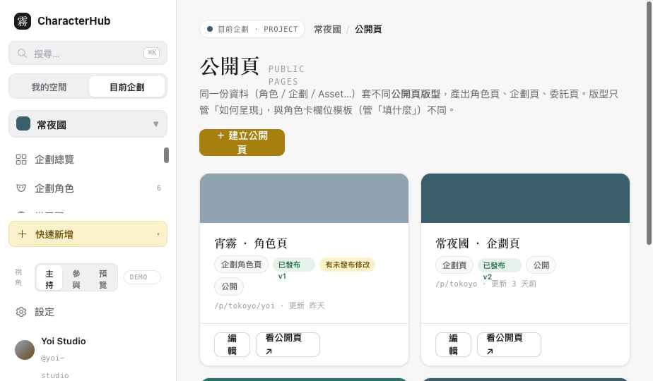
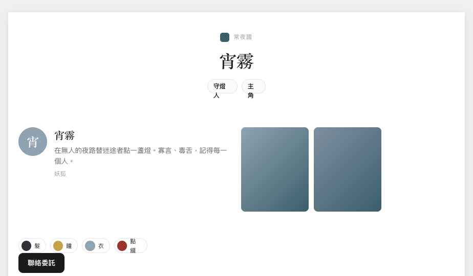

公開頁 Builder 架構與 UI 原型完成。核心：同一份 Character／ProjectCharacterLink／Project／Asset 資料，套不同公開頁版型，產出角色頁／企劃頁／委託頁。版型管「如何呈現」，與角色卡欄位模板（管「填什麼」）嚴格分離。


兩者不混用，UI 文案分別為「角色卡欄位模板」與「公開頁版型」。
Layout：Page › Section › Stack|Grid › Block（最多三層巢狀、桌機最多四欄、手機自動收欄、無自由座標）。資料綁定：用可選擇／可驗證的 binding {source, entity, field}（Character.name、ProjectCharacterLink.fieldValues["ability_type"]、AssetLink role="gallery"…），不讓使用者輸入工程 path，不另建第二份角色資料（PageDataContext 僅供渲染）。Block Registry：14 種 Block 共用 {type,label,category,defaultProps} 契約，Inspector 統一，不各自長出設定 UI。
主持人建立企劃公開頁版型，Block 可設 locked／required／memberCanHide／memberCanReorder／memberCanRestyle。主持人可鎖定 Logo、角色名稱、陣營等必要區塊（已驗證 4 個鎖定徽章）；成員套用版型時只能調整被允許的部分，鎖定區塊 Inspector 顯示「由主持人鎖定，你不能修改」。Host 編輯版型時 Inspector 顯示「主持人鎖定」開關組。
Builder 編輯 Draft；發布展示 Draft Layout → 權限裁切 → Public Data Snapshot → Published Version 四步。Public Renderer 只讀 Published Version（?preview=draft 才看草稿，附預覽橫幅）。狀態：尚未發布／有未發布修改／已發布／發布失敗（?failpublish=1）／預覽 Draft／預覽 Published／回滾。公開裁切：頁面或其綁定資料非公開時 Renderer 擋下、不洩漏；綁定失效顯示 Broken Binding，缺資料顯示 Missing。
≥1200 左 Panel＋Canvas＋右 Inspector；768–1199 Inspector 收起；<768 提示複雜版面建議桌機（不縮三欄）。A11y：Block 鍵盤選取、排序上移/下移替代、Inspector 表單 label、Modal Focus Trap＋Esc、選取不只靠顏色、reduced-motion。狀態：Empty Page／Missing Data／Save Error／Publish Error／Forbidden／Broken Binding／Missing Asset／Template Update／Unsaved。
| 檔案 | 變更 |
|---|---|
| assets/data.js | PublicPageTemplate（含鎖定 block tree）／PublicPage 實例（draft/published/unpublished）／Block Registry（14）＋helper（publicPagesOf/pageTemplate/resolveBinding/pagePublicData…）；ACTION_GRANTS 補 publicPage／pageTemplate。 |
| assets/pagerender.js | 共用 block 樹渲染器（Builder 與 Renderer 共用、同一 Registry 契約、binding 解析、Broken/Missing）。 |
| assets/pagebuilder.css | 列表、Builder 三欄殼、Canvas、左 Panel、Inspector、發布步驟、Renderer。 |
| pages/public-pages.html | 列表＋建立流程＋Builder（Top Bar/左 Panel/Canvas/Inspector/裝置預覽/發布）。 |
| pages/portal.html | 重寫為 Published Public Renderer（無側欄、讀 Published、公開裁切、Draft 預覽）。 |
| assets/shell.js · index.html | 側欄「公開頁」指向 public-pages.html；總覽連結更新。 |
PB0 完成，先停。等你驗收，再回頭做 Participants／Permissions。
維持單一 OCData、Demo interaction only，未建立 Repository／API／D1／R2／Auth／第二套 Store。